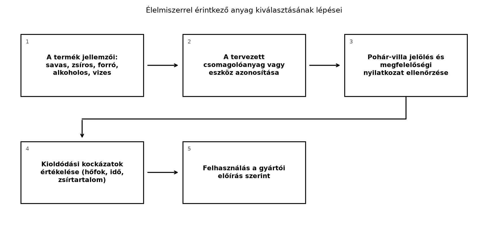
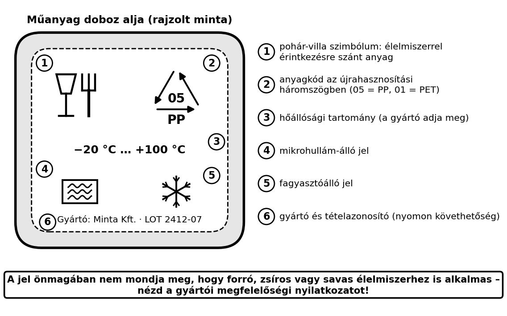

A csomagolóanyagok és az élelmiszerrel érintkező eszközök kiválasztása a cukrászüzemben ugyanolyan élelmiszerbiztonsági szempont, mint a nyersanyagok kezelése. Gondolj egy forró, savas citromkrémmel töltött minyonra, amelyet rosszul megválasztott alufóliába csomagolunk. A vendég fémes ízt érez, a tételt selejtezni kell, a hibát pedig csak utólag értjük meg. Ez a fejezet megtanít arra, hogyan válaszd ki az élelmiszerrel érintkezésre alkalmas csomagolóanyagot, és hogyan gondolkodj az adalékanyagok engedélyezéséről.
A folyamatot az alábbi ábra foglalja össze:

Definíció. Élelmiszerrel érintkező anyagok (food contact materials, FCM) mindazok az anyagok és tárgyak, amelyek rendeltetésszerűen érintkeznek élelmiszerrel, vagy ésszerűen várhatóan érintkezhetnek. Ilyenek a csomagolóanyagok, edények, sütőformák, habzsákok, tálcák, tésztakapcsok, díszítőelemek és a gépek élelmiszerrel érintkező felületei is.
Definíció. Kioldódás, migráció alatt azt értjük, amikor a csomagolóanyag vagy eszköz valamely alkotóeleme átkerül az élelmiszerbe. A migráció lehet összes kioldódás (overall migration) vagy fajlagos kioldódás (specific migration), amikor egy adott anyag mennyiségét mérik. A kioldódás mértékét befolyásolja az élelmiszer hőmérséklete, savassága, zsírtartalma, valamint az érintkezés időtartama.
Szabály. Minél forróbb, savasabb, zsírosabb vagy alkoholosabb az élelmiszer, annál nagyobb a kioldódás kockázata. Ezért a gyártói adatlapokon meg kell nézni, hogy az adott anyag milyen hőmérsékleten, milyen élelmiszertípushoz és mennyi ideig használható.
A cukrászatban leggyakrabban az alábbi anyagcsoportokkal dolgozunk.
| Anyagcsoport | Gyakori cukrászati felhasználás | Előny | Tipikus kockázat | Mit ellenőrizzünk? |
|---|---|---|---|---|
| Üveg, porcelán, kerámia | Tálalóedények, tárolók, sütőformák | Kémiailag stabil, újrahasznosítható | Ütésre törhet; régi kerámiamáz ólmot adhat le | Ép felület, repedésmentesség, élelmiszeres jelölés |
| Műanyag (PP, PE, PET) | Dobozok, fóliák, tálcák, habzsákok, nyomózsákok | Könnyű, olcsó, sokféle alak | Lágyítók, monomer maradékok; forró, zsíros élelmiszerben oldódhat; régi polikarbonát edény biszfenol-A-t adhat le, a BPA-tartalmú élelmiszerrel érintkező anyagot az EU kivezette (ellenőrizendő: (EU) 2024/3190 rendelet, átmeneti idők) | Pohár-villa, gyártói hőállóság, zsírállóság, savállóság |
| Alumínium | Sütőlemez, fólia, tálcák | Jó hővezető, egyszerhasználatos | Savas vagy sós élelmiszerből fémoldódás; bevonat nélküli felület | Savas élelmiszerhez bevonat vagy fólia nélkül ne használjuk |
| Papír, karton | Tortadobozok, sütőpapír, kapszlik, tálcák | Olcsó, nyomtatható | Festék, ragasztó, visszanyert rost szennyező; zsírállóság hiánya | Élelmiszeres minősítés, zsírálló bevonat, nyomdafesték ne érintkezzen élelmiszerrel |
| Szilikon | Sütőformák, spatulák, díszítőformák | Hőálló, tapadásmentes | Töltőanyagok, gyenge minőségű szilikon bomlástermékei | Hőállósági nyilatkozat, élelmiszeres jelölés, ne vágjuk meg |
| Fém (rozsdamentes acél) | Üstök, habverő, tálak, sütőlemezek | Tartós, kémiailag stabil | Felületi sérülésben megtapadó maradék; savanyú élelmiszer rozsdásodás | Sima, ép felület, saválló minőség |
A táblázatban szereplő kockázatok nem jelentik azt, hogy az adott anyagot tilos használni, hanem azt, hogy a felhasználási feltételeket ellenőrizni kell. Például savas citromkrémet nem teszünk bevonat nélküli alumíniumtálcára, mert a sav kioldhatja az alumíniumot. Hasonlóképpen forró, zsíros ganache-t nem öntünk olyan műanyag edénybe, amelynek nincs meleg- és zsírállósági nyilatkozata.
Jogszabály. Az élelmiszerrel érintkező anyagokra vonatkozó általános keretet az EU 1935/2004/EK rendelete adja. Eszerint az anyagok nem adhatnak le az egészséget veszélyeztető mennyiségű összetevőt, nem változtathatják meg elfogadhatatlanul az élelmiszer összetételét, és nem ronthatják annak érzékszervi tulajdonságait. A műanyagokra külön uniós rendelet, a 10/2011/EU rendelet vonatkozik: az összes kioldódás határát (jellemzően 10 mg/dm², ill. 60 mg/kg) és az anyagonkénti fajlagos migrációs határértékeket (SML) állapítja meg; az SML-eket egy-egy anyagra, jellemzően mg/kg élelmiszerben adják meg. A papír- és kartontermékekre ez a rendelet nem vonatkozik. (ellenőrizendő: 10/2011/EU rendelet hatályos módosításai és határértékei)
A gyakorlatban az élelmiszerrel érintkezésre való alkalmasságot a pohár-villa szimbólum vagy a gyártói megfelelőségi nyilatkozat jelzi. A szimbólum önmagában nem elég, ha nem tudjuk, milyen élelmiszerhez és milyen hőmérsékletre szól. Ezért beszerzéskor mindig kérjük a gyártói adatlapot vagy nyilatkozatot.

A rajzolt dobozalj a leggyakoribb jelöléseket mutatja: a pohár-villa szimbólumot (1), az újrahasznosítási háromszögben álló anyagkódot (2; 05 = PP, 01 = PET), a hőállósági tartományt (3), a mikrohullám-álló (4) és a fagyasztóálló jelet (5), valamint a gyártót és a tételazonosítót (6). A hőmérséklet-tartomány a rajzon kitalált példa; a valós értéket és a felhasználási feltételeket (forró, zsíros, savas élelmiszer) a gyártói megfelelőségi nyilatkozat adja meg.
Az adalékanyagok nem önmagukban fogyasztható élelmiszerek, hanem olyan anyagok, amelyeket előre meghatározott technológiai céllal adnak az élelmiszerhez. A cél lehet tartósítás, állagjavítás, színezés, édesítés, savanyítás, emulgeálás, zselésítés vagy térfogatnövelés.
Definíció. Élelmiszer-adalékanyag: olyan anyag, amelyet technológiai okból adnak az élelmiszerhez, és a késztermékben az anyag maga vagy bomlástermékei jelen lehetnek. Az adalékanyagokat E-számmal jelölik, és felhasználásukat az EU pozitív listája engedélyezi.
Szabály. Az adalékanyagok csak akkor használhatók, ha az adott élelmiszer-kategóriára és a megadott legnagyobb mennyiségig engedélyezettek. Az engedélyezés alapja az Európai Élelmiszerbiztonsági Hatóság (EFSA) tudományos kockázatértékelése, amely meghatározza a biztonságos napi bevitelt (ADI). A felhasználásnak technológiailag indokoltnak kell lennie, és nem vezetheti félre a fogyasztót.
Jogszabály. Az adalékanyagok engedélyezését és felhasználási feltételeit az EU 1333/2008/EK rendelete szabályozza. Az engedélyezett anyagok listáját, élelmiszer-kategóriánkénti megengedett mennyiségét és a jelölési kötelezettségeket az EU rendelete és annak magyar átültetése tartalmazza. (ellenőrizendő: hatályos mellékletek és kategóriák)
A cukrászatban gyakori adalékanyag-csoportok:
Fontos megkülönböztetni az adalékanyagot a feldolgozási segédanyagtól. A segédanyagot a gyártás során használjuk, de a késztermékben technológiai hatást már nem fejt ki, vagy csak technológiailag elkerülhetetlen maradékai vannak. Ilyen lehet például egy derítőszer vagy egy formaelválasztó anyag, ha a késztermékben nem marad technológiai hatása. A segédanyagokat nem feltétlenül jelölik E-számmal a készterméken, de használatukat ugyanúgy a helyes gyártási gyakorlat szerint kell végezni.
A csomagolóanyagokkal kapcsolatos összes kioldódási határértéket gyakran területegységre (mg/dm²) adják meg, az adalékanyagoknál pedig tömegre (mg/kg). Két rövid példán mutatjuk be a számolást.
Példa 1. Kioldódási felület. Egy kör alakú műanyag tárolódoboz aljának átmérője 20 cm, magassága 8 cm. Számítsuk ki a doboz belső felületét dm²-ben, ha az alját és a palástját élelmiszer érheti.
Adott: , így ; .
Alapterület:
Palást:
Teljes belső felület:
Ha egy műanyag tárolóedényre az összes kioldódás határértéke például (tanulási példa; ellenőrizendő: 10/2011/EU rendelet), akkor a maximális elméleti kioldódás:
Ez a számítás csak a nagyságrend megértésére szolgál; a valódi vizsgálat során az élelmiszer-szimulánst és a hőmérséklet-idő kombinációt is meg kell adni.
Példa 2. Tartósítószer adagolása. Egy gyümölcszseléhez kálium-szorbátot (E202) használunk. A jogszabály (1333/2008/EK) a szorbátok legnagyobb mennyiségét szorbinsavban kifejezve adja meg; a kálium-szorbát egyenértéke ennél nagyobb tömeg (ellenőrizendő: 1333/2008/EK II. melléklet). Tanulási példánkban a gyártói adatlap már kálium-szorbátra adja meg a késztermékben megengedett legnagyobb mennyiséget: (ellenőrizendő: az adott termékkategória hatályos határértéke). Mennyi tartósítószert adhatunk zseléhez?
Képlet:
ahol , .
Behelyettesítés:
Tehát legfeljebb kálium-szorbát adagolható a teljes zseléhez, ha a receptúra és a technológia ezt indokolja. A mérlegelést mindig hiteles mérlegen, a receptúrában rögzített mennyiség szerint végezzük.
Az élelmiszerrel érintkező anyagoknál a következő ellenőrző listát kövesd:
Tilos. Élelmiszerrel érintkezésre nem alkalmas, ipari célú műanyagot, festékkel bevont kartont, régi, ismeretlen eredetű edényt vagy sérült bevonatú fémet közvetlen élelmiszerrel érintkezésbe hozni. Ez a gyakorlat illegális és élelmiszerbiztonsági kockázatot jelent.
Higiénia. A csomagolóanyagokat tiszta, száraz, szagmentes helyen tároljuk. A fóliákat, dobozokat ne tegyük közvetlenül a földre, és ne használjunk olyan papírt, amelynek nyomdafestéke az élelmiszerrel érintkezhet. A habzsákokat és szilikonformákat használat után alaposan mosogassuk, mert a zsír és a színezék beivódik a felületbe.
Figyelem. Forró folyadékot (például forró fondánt, olvasztott csokoládét) csak olyan edénybe önts, amelynek gyártói adatlapja megengedi a hőállóságot. A nem megfelelő műanyag meglágyulhat, káros anyagokat adhat le, és égési sérülést okozhat.
A díszítőelemek – pálcák, szalagok, műanyag figurák, virágtartók – akkor élelmiszerrel érintkező anyagok, ha közvetlenül vagy közvetve érintkeznek a termékkel. A nem ehető díszítést mindig jelölni kell: a vendégnek tudnia kell, hogy azt nem szabad megenni. A jelölés lehet a csomagoláson, az ártáblán vagy a tálalásnál szóban. A tálalásnál a nem ehető dísz ne szennyezze az élelmiszert, és ne legyen olyan anyagból, amely festéket, ragasztót vagy apró, lenyelhető részt adhat le. Élő virágot csak akkor tegyünk élelmiszerre, ha ismert, hogy emberi fogyasztásra alkalmas fajta, és nem kezelték növényvédő szerrel. (ellenőrizendő: ehető virágokra és dekorációs anyagokra vonatkozó aktuális előírások)
A csomagolóanyagok és adalékanyagok átvételekor az alábbiakat ellenőrizzük:
Hiba: savas citromos desszert bevonat nélküli
alumíniumtálcán áll.
Ok: a sav kioldja az alumíniumot, fémes íz és
szennyeződés keletkezik.
Megelőzés: savas élelmiszerhez bevonatos alutálcát,
műanyagot vagy üveget használj; ellenőrizd a savállóságot.
Hiba: forró ganache-t ismeretlen műanyag edénybe
öntenek.
Ok: a hő és a zsír fokozza a lágyítók, monomerek
kioldódását; az edény deformálódhat.
Megelőzés: csak meleg- és zsírálló műanyagot használj;
ha nincs adatlap, használj rozsdamentes acél edényt.
Hiba: tartósítószert „szemre” adagolnak, a mérleget nem
nullázzák.
Ok: a túladagolás határérték-túllépést okoz, az
aluladagolás pedig nem véd meg a mikrobáktól.
Megelőzés: a receptúrában rögzített mennyiséget hiteles
mérlegen mérd ki, és jegyezd fel a tétel azonosítóját.
Hiba: nem ehető tortadíszt süllyesztenek a krémbe, és nem
jelölik.
Ok: a vendég megeheti, félrenyelheti, vagy a díszből
színezék, ragasztó oldódhat a krémbe.
Megelőzés: csak élelmiszerrel érintkezésre alkalmas
dísz kerüljön közvetlenül a termékbe; a nem ehető dísz legyen
elkülönítve, és legyen jelölés.
Egy cukrászüzem nyári esküvői rendelésre készül. A citromos mascarpone szeleteket egyedi, fémes színű alutálcákra adagolják, hogy a büféasztalon jól mutassanak. A tálcák gyártói adatlapját senki nem ellenőrizte, és a bevonat nélküli felület savas citromkrémmel érintkezett. A vendégek közül többen fémes mellékízre panaszkodtak. Az üzemvezető a teljes tételt visszavonta, a tálcákat selejtezte, és beszerzett bevonatos, saválló tálcákat. Az eset után minden csomagolóanyagnál kötelezővé tették a megfelelőségi nyilatkozat bekérését és a felhasználási feltételek ellenőrzését. A tanulság: a csomagolóanyag nem csak külcsín, hanem az élelmiszerbiztonsági rendszer része.
1. feladat (A). Határozd meg az élelmiszerrel érintkező anyag fogalmát, és mondj három cukrászati példát.
2. feladat (A). Számítsd ki egy 30 cm átmérőjű, 6 cm magas kerek tortadoboz belső aljának felületét dm²-ben! (Csak az alját, a palástot ne.)
3. feladat (B). Egy gyümölcszseléhez a receptúra készterméket ír elő. A tartósítószer megengedett legnagyobb mennyisége (ellenőrizendő). Hány gramm tartósítószert adagolhatsz legfeljebb? Végezd el az ellenőrzést is.
4. feladat (B). Válaszd ki a megfelelő csomagolóanyagot egy forró, zsíros marcipános csokoládékrémhez, ha rendelkezésre áll: (a) bevonat nélküli alumíniumtál, (b) meleg- és zsírálló műanyag doboz gyártói nyilatkozattal, (c) ismeretlen eredetű, festett karton. Indokold a döntést!
5. feladat (C). Egy vendég allergiás a szulfitokra. A cukrászüzemben kálium-metabiszulfitot használnak egyes aszalt gyümölcsök kezelésére. Milyen keresztszennyeződési kockázatokra kell figyelni a csomagolásnál és az adagolásnál? Fogalmazz meg legalább két megelőző intézkedést!
6. feladat (D). Készíts egy egyszerű „csomagolóanyag-átvételi ellenőrző lapot” a saját tanulókonyhád vagy egy képzeletbeli cukrászüzem számára. A lap tartalmazzon legalább öt ellenőrzési pontot, és mindegyikhez rövid magyarázatot!
Önellenőrzés – válaszok
1. feladat megoldása.
Az élelmiszerrel érintkező anyagok mindazok az anyagok, tárgyak, amelyek
élelmiszerrel érintkeznek vagy ésszerűen várhatóan érintkezhetnek.
Példák: habzsák, tortadoboz, szilikon sütőforma.
2. feladat megoldása.
Adott:
,
így
.
Alapterület:
.
A doboz alja körülbelül
felülettel érintkezhet a tortával.
3. feladat megoldása.
Adott:
,
.
Képlet:
.
Behelyettesítés:
.
Ellenőrzés:
;
visszaszámolva
,
ami a megengedett határ. ∎
4. feladat megoldása.
A helyes választás a (b) meleg- és zsírálló műanyag doboz gyártói
nyilatkozattal. Az (a) bevonat nélküli alumíniumtál a krém savassága
miatt ugyan nem kockázatos, de forró, zsíros krémhez nincs megfelelőségi
nyilatkozata, ezért nem választható; forró zsíros krémnél fennáll a
kioldódás kockázata. A (c) festett karton ismeretlen eredetű, a festék
és a visszanyert rost szennyezheti az élelmiszert.
5. feladat megoldása.
A szulfit allergén kockázatot jelent. Megelőző intézkedések: a szulfitos
kezelést elkülönített helyen, zárt edényben végezzük; a kezelt aszalt
gyümölcsöket zárt, címkézett dobozban tároljuk; a mérleget és az
adagolóeszközt használat után azonnal mossuk el, ne érintkezzen más
termékkel; a csomagolásnál ellenőrizzük, hogy a szulfitot nem jelző
termékekhez ne használjunk ugyanazt a kanalat.
6. feladat megoldása.
Egy lehetséges ellenőrző lap mintája:
| Ellenőrzési pont | Magyarázat |
|---|---|
| Megfelelőségi nyilatkozat megléte | Igazolja az élelmiszerrel érintkezésre való alkalmasságot |
| Pohár-villa vagy élelmiszeres jelölés | Azonosítja a felhasználási kört |
| Sértetlen, tiszta, szagmentes felület | A sérült anyag kioldódást, szennyezést okozhat |
| Gyártói hő- és zsírállósági adat | Forró, zsíros élelmiszerhez való használat feltétele |
| A tárolási feltételek betartása | Száraz, hűvös, napfénytől védett hely; ne a földön |
| A díszítőelemek jelölése | Nem ehető dísz esetén egyértelmű tájékoztatás |
Az élelmiszerrel érintkező anyagok minden olyan csomagolóanyagot, edényt és díszítőelemet magukban foglalnak, amelyek élelmiszerrel érintkezhetnek. Kiválasztásukkor a termék tulajdonságaiból kell kiindulni: forró, savas, zsíros vagy alkoholos élelmiszer növeli a kioldódás kockázatát. A pohár-villa szimbólum és a gyártói megfelelőségi nyilatkozat együttesen igazolja az alkalmasságot; a felhasználási feltételeket mindig ellenőrizni kell. Az adalékanyagokat az EU 1333/2008/EK rendelete szerint engedélyezik, pozitív listás rendszerben. Csak az adott élelmiszer-kategóriára engedélyezett anyag, a megengedett mennyiségig használható. A díszítőelemeknél a nem ehető dekorációt jelölni kell, és élelmiszerrel érintkezésre alkalmas anyagból kell készülnie. Továbbvitt eredmény. Ezt a csomagolóanyag- és díszítőelem-szabályt használjuk az Allergének és intoleranciák: tájékoztatás és allergénkezelés a cukrászüzemben alfejezetben a keresztszennyeződés elkerülésére, valamint az Adalékanyagok: szabályozás, E-számok és csoportok alfejezetben az egyes anyagcsoportok részletes tárgyalásánál.